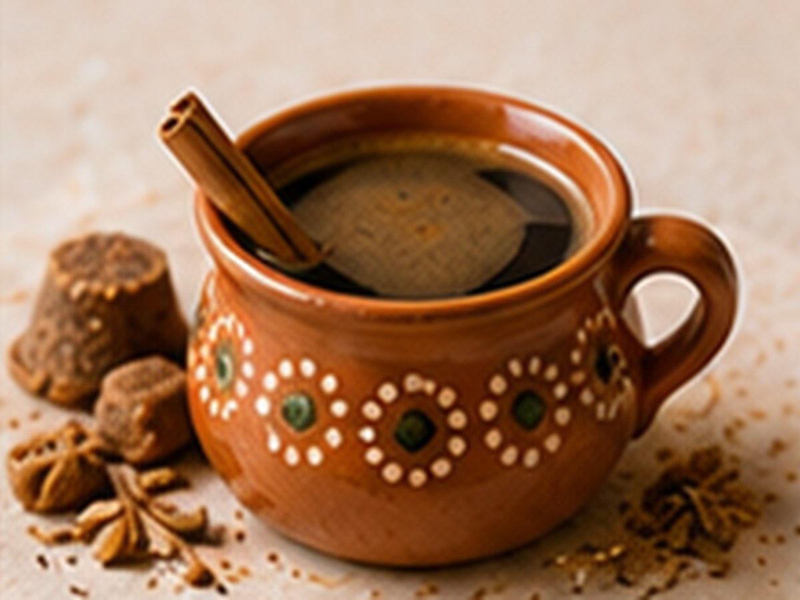

✨ KI-generiertes Bild Kaffee aus aller WeltKaffee aus aller Welt
Mexikanischer Café de Olla
Mit Zimt und Piloncillo gekocht.
⏱10 Min.
📶Mittel
☕4 Portionen
🫘Zutaten
- Kaffee, grob gemahlen40 g
- Wasser800 ml
- Zimtstange1 Stück
- Brauner Zucker3 EL
📋Zubereitung
- 1Wasser mit Zimt und Zucker aufkochen.
- 2Kaffee dazugeben und 5 Minuten ziehen lassen.
- 3Durch ein Sieb in Tassen gießen.
💡
Kaffee für dieses Rezept entdeckenLeNoKo Shop
→
Kaffee-Tipp
unseren Corintio mit seinen Sirupnoten harmoniert gut mit dem braunen Zucker.